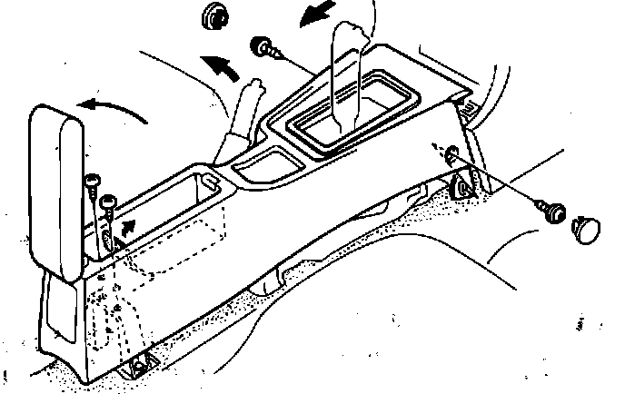
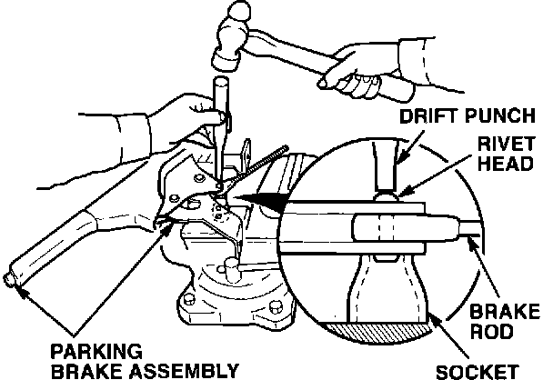

Parking Brake - Does Not Release Fully
BULLETIN NO.94-001
March 15, 1994
YEAR
1993 - 94
MODEL
VIGOR
VIN APPLICATION
ALL
Parking Brake Does Not Release Fully
SYMPTOMS
^ The parking brake lever does not go down fully.
^ The parking brake indicator light does not go out.
^ The ABS indicator comes on; the diagnostic indicates a Code 2.
PROBABLE CAUSE
The rivet fastening the brake rod to the lever clamps too tightly, causing binding. This prevents the parking brake from releasing fully.
CORRECTIVE ACTION
Lengthen the rivet slightly so the brake rod moves more freely.

1. Remove the center console.
2. Remove the parking brake adjusting nut. Disconnect the equalizer from the brake rod.
3. Remove the two bolts that mount the parking brake lever assembly. Remove the assembly from the car.

4. Position the parking brake assembly on an 8 mm socket with the flat side of the brake rod rivet facing down, as shown. Strike a 3/16 inch drift punch several times with a hammer to slightly lengthen the rivet.
5. Check that the brake rod moves more freely, with only slight friction.
6. Install the parking brake lever assembly in the car. Reconnect the equalizer to the brake rod with the original nut. Reinstall the console.
7. Adjust the parking brake.
WARRANTY CLAIM INFORMATION
In warranty:
The normal warranty applies.
Out of warranty:
Any repair performed after warranty expiration may be eligible for goodwill consideration by the District Service Manager or your Zone Office. You must request consideration, and get a decision, before starting work.
Operation number: 412305
Flat rate time: 0.5 hour
Failed P/N: 47105-SL5-A00ZA
Defect code: 030
Contention code: B01